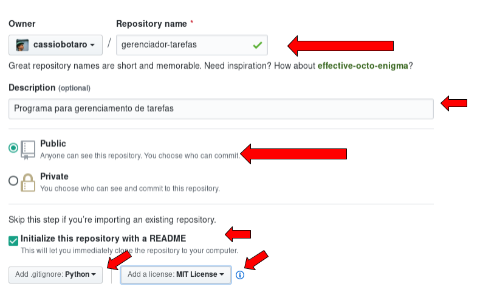

Iniciando o projeto
Já temos as espátulas, facas, colheres e outros instrumentos na mesa, mas, para prosseguirmos, precisamos escolher os melhores ingredientes.
Desenvolver um projeto não significa escrever tudo do zero e poderemos contar com ajuda de trechos escritos por outros programadores. Estes trechos comuns de código são chamados bibliotecas e vamos acabar adicionando algumas ao nosso projeto.
Mas antes de tudo, precisamos iniciar nosso projeto.
▶️ Começando a tirar o projeto do papel
Daremos nosso primeiro passo, criando um diretório onde serão armazenados todos os arquivos do projeto.
Faremos isto utilizando o github, que é uma plataforma gratuita, muito conhecida e que irá nos ajudar com algumas integrações no futuro.
Mas por que iniciaremos criando o projeto lá e não no próprio computador?
O primeiro motivo é que já criaremos o projeto com controle de versão, ou seja a cada passo da sua criação vamos salvando as alterações, evitando que os passos se percam e, caso necessário poderemos desfazer algum passo errado.
Outro motivo é que se algo acontecer com seu computador, teremos salvo uma versão do projeto.
Abra seu navegador e acesse o seguinte endereço: http://github.com. Crie uma conta se ainda não tiver.
Aperte o botão novo_repositório.

Preencha os campos como visto na imagem abaixo.
Warning
As setas indicam o que deve ser preenchido.

Volte para o terminal que você usou anteriormente e navegue até o diretório onde você deseja salvar o seu projeto. Observe os exemplos abaixo e adapte para o diretório que desejar:
Caso o terminal não esteja aberto, clique no botão iniciar, busque por powershell e abra o programa Windows PowerShell. Agora digite cd C:\.
Caso o terminal não esteja aberto, abra um terminal e digite cd ~/.
Até agora nós iniciamos o nosso projeto apenas na web, em nossa conta do github, mas, agora iremos trazer uma cópia do que está no github para a nossa máquina local. Para isso, utilizaremos um comando de nossa ferramenta de controle de versão git chamada "clone".
git clone é um comando para criar uma cópia dos arquivos e suas versões. Pode ser feito para trazer uma cópia do repositório do servidor para o computador local.
Para isso, iremos copiar a URL do repositório do github conforme a imagem abaixo:
Warning
O comando abaixo deve ser modificado com a URL que você acabou de copiar.
$ git clone https://github.com/cassiobotaro/gerenciador-tarefas.git
Cloning into 'gerenciador-tarefas'...
remote: Counting objects: 5, done.
remote: Compressing objects: 100% (4/4), done.
remote: Total 5 (delta 0), reused 0 (delta 0), pack-reused 0
Unpacking objects: 100% (5/5), done.
Aproveite e já configure seu usuário git para este projeto, dentro do diretório recém clonado e digite os seguintes comandos.
Warning
Os comandos abaixo devem ser modificados com seu email e nome de usuário do github.
$ git config --local user.email cassiobotaro@github.com
$ git config --local user.name cassiobotaro
"Voilà", já temos o projeto iniciado.
Navegue até o diretório onde foi executado o comando de clone do projeto. Prossiga com a instalação das bibliotecas de acordo com o seu sistema operacional.
Warning
Não se esqueça de entrar no diretório do projeto antes de continuar a instalação das bibliotecas.
üñ•Ô∏è O ambiente virtual
Iniciei um projeto e ele utiliza a biblioteca fastapi na versão 0.2, três meses depois fui iniciar outro e a versão do fastapi já era 0.3.
Será que não dá problema se eu mudar no primeiro projeto? Ou será que mudo no segundo?
Para evitar este tipo de problema, vamos criar o que chamaremos de ambiente virtual.
Na prática o que vamos fazer é instalar as bibliotecas em um diretório que está relacionado ao projeto. Assim cada projeto pode ter suas próprias bibliotecas na versão que quiser.
O comando para isto é:
Volte ao Windows PowerShell. Agora digite python -m venv .venv.
Volte ao terminal e digite python3 -m venv .venv.
Sendo que .venv é o nome deste ambiente isolado.
Este ambiente isolado será visto como um diretório criado na pasta do projeto.
O ponto na frente do nome faz com que o diretório fique oculto em ambientes linux
Depois de criado, temos de ativar este ambiente e isto é importante pois sempre que decidir trabalhar neste projeto você deverá repetir este passo.
O comando para isto é:
Volte ao Windows PowerShell. Agora digite .venv\Scripts\activate.
Volte ao terminal e digite source .venv/bin/activate.
Pronto, agora estamos preparados para instalar as bibliotecas que precisaremos.
üìö Bibliotecas e utilitários
Chegou a hora de instalar algumas bibliotecas e utilitários que nos auxiliarão na criação do nosso sistema web, na realização de testes unitários e testes manuais.
Siga os passos de acordo com o seu sistema operacional para cada ferramenta. Tenha sempre certeza de que a ferramenta está instalada e funcionando.
Warning
Certifique-se de que seu ambiente está ativo antes de prosseguir com as instalações.
⚡ FastAPI
O que é?
O fastapi é uma ferramenta para desenvolvimento web, possui alta performance, fácil de aprender, rápida para escrever código e pronta para colocar o código no ar.
Para que serve?
Serve para escrevermos nossa aplicação web de forma rápida e customizável.
Possui funções que auxiliam operações como roteamento, tratamento de requisições, renderização de conteúdo, gerenciamento de sessão e cookies, assim como várias outras que são típicas da web.
Como instalar
Warning
Preste atenção que os comandos serão executados dentro do diretório do projeto.
Volte ao Windows PowerShell e digite o comando pip install fastapi.
Volte ao terminal e digite o comando pip install fastapi.
Vamos verificar se deu tudo certo?
Volte ao Windows PowerShell e agora digite python -c "import fastapi". Nenhum erro deve ocorrer.
Volte ao terminal e agora digite python -c "import fastapi". Nenhum erro deve ocorrer.
üîó Httpie
O que é?
HTTPie é um cliente HTTP por linha de comando. Seu objetivo é transformar a interação com serviços web o mais humano possível.
Para que serve?
Em diversos momentos do curso, teremos de testar manualmente se nosso sistema está funcionando, ainda que possua testes automatizados.
Esta ferramenta ajuda a fazer estes testes de uma maneira mais simples.
Como instalar
Volte ao Windows PowerShell e digite o comando pip install httpie.
Volte ao terminal e digite o comando pip install httpie.
Vamos verificar se deu tudo certo?
Volte ao Windows PowerShell e agora digite o comando http --version.
Volte ao terminal e agora digite o comando http --version.
Warning
Note que foi utilizado o comando http ao invés de httpie, este é o nome do executável do httpie depois de instalado no sistema.
A saída para ambos os sistemas operacionais deverá ser similar a apresentada abaixo:
$ http --version
3.2.1
ü¶Ñ Uvicorn
O que é?
O uvicorn é um servidor de aplicação com suporte a frameworks assíncronos.
Para que serve?
O uvicorn serve para rodar a nossa aplicação, tanto na nossa máquina quanto em um servidor na internet.
Como instalar
Volte ao Windows PowerShell e digite o comando pip install uvicorn.
Volte ao terminal e digite o comando pip install uvicorn.
Vamos verificar se deu tudo certo?
Volte ao Windows PowerShell e agora digite o comando uvicorn --help.
Volte ao terminal e agora digite o comando uvicorn --help.
A saída para ambos os sistemas operacionais deverá ser similar a apresentada abaixo:
Usage: uvicorn [OPTIONS] APP
Options:
--host TEXT Bind socket to this host. [default:
127.0.0.1]
--port INTEGER Bind socket to this port. [default: 8000]
--uds TEXT Bind to a UNIX domain socket.
--fd INTEGER Bind to socket from this file descriptor.
--reload Enable auto-reload.
--reload-dir TEXT Set reload directories explicitly, instead
of using the current working directory.
--workers INTEGER Number of worker processes. Defaults to the
$WEB_CONCURRENCY environment variable if
available. Not valid with --reload.
--loop [auto|asyncio|uvloop|iocp]
Event loop implementation. [default: auto]
--http [auto|h11|httptools] HTTP protocol implementation. [default:
auto]
--ws [auto|none|websockets|wsproto]
WebSocket protocol implementation.
[default: auto]
--lifespan [auto|on|off] Lifespan implementation. [default: auto]
--interface [auto|asgi3|asgi2|wsgi]
Select ASGI3, ASGI2, or WSGI as the
application interface. [default: auto]
--env-file PATH Environment configuration file.
--log-config PATH Logging configuration file.
--log-level [critical|error|warning|info|debug|trace]
Log level. [default: info]
--access-log / --no-access-log Enable/Disable access log.
--proxy-headers / --no-proxy-headers
Enable/Disable X-Forwarded-Proto,
X-Forwarded-For, X-Forwarded-Port to
populate remote address info.
--forwarded-allow-ips TEXT Comma seperated list of IPs to trust with
proxy headers. Defaults to the
$FORWARDED_ALLOW_IPS environment variable if
available, or '127.0.0.1'.
--root-path TEXT Set the ASGI 'root_path' for applications
submounted below a given URL path.
--limit-concurrency INTEGER Maximum number of concurrent connections or
tasks to allow, before issuing HTTP 503
responses.
--limit-max-requests INTEGER Maximum number of requests to service before
terminating the process.
--timeout-keep-alive INTEGER Close Keep-Alive connections if no new data
is received within this timeout. [default:
5]
--ssl-keyfile TEXT SSL key file
--ssl-certfile TEXT SSL certificate file
--ssl-version INTEGER SSL version to use (see stdlib ssl module's)
[default: 2]
--ssl-cert-reqs INTEGER Whether client certificate is required (see
stdlib ssl module's) [default: 0]
--ssl-ca-certs TEXT CA certificates file
--ssl-ciphers TEXT Ciphers to use (see stdlib ssl module's)
[default: TLSv1]
--header TEXT Specify custom default HTTP response headers
as a Name:Value pair
--help Show this message and exit.
üö¶ Pytest
O que é?
O framework pytest é fácil para escrever teste simples, ainda escala para suportar testes funcionais complexos para aplicações e bibliotecas.
Para que serve?
Já dizia Michael C. Feathers, "Um código sem testes, é um código ruim. Não importa quão bem ele foi escrito". Vamos então instalar o pytest, que é uma ferramenta que auxilia na execução de testes.
Como instalar
Volte ao Windows PowerShell e digite o comando pip install pytest.
Volte ao terminal e digite o comando pip install pytest.
Vamos verificar se deu tudo certo?
Volte ao Windows PowerShell e agora digite o comando pytest --version.
Volte ao terminal e agora digite o comando pytest --version.
A saída para ambos os sistemas operacionais deverá ser similar a apresentada abaixo:
$ pytest --version
pytest 7.1.2
⚠️ Nota importante sobre ambientes virtuais
Se neste momento, voc√™ digitar cmd no windows, ou abrir um terminal no linux e digitar python3 ou python no windows, e em seguida tentar importar a bilbioteca fastapi o seguinte erro será mostrado. üò±
$ python
Python 3.10.4 (main, Apr 20 2022, 22:30:21) [GCC 11.2.0] on linux
Type "help", "copyright", "credits" or "license" for more information.
>>> import fastapi
Traceback (most recent call last):
File "<stdin>", line 1, in <module>
ModuleNotFoundError: No module named 'fastapi'
>>>
Tip
Utilize Ctrl + d ou exit() para sair do python.
Acontece que instalamos o FastAPI somente no ambiente virtual. Para entrarmos no ambiente virtual:
Volte ao Windows PowerShell e agora digite o comando .venv\Scripts\activate.
Volte ao terminal e agora digite o comando source <venv>/bin/activate.
Salvando o momento atual do nosso projeto
Neste momento seu diretório deve estar assim:
.
├── LICENSE
└── README.md
E se eu te pedisse agora uma cópia do projeto, como eu saberia de toda essa lista de coisas necessárias pro código rodar?
Para evitar este problema criaremos arquivos com as dependências que instalamos no nosso projeto.
Vamos começar criando um arquivo chamado requirements.txt com o seguinte conteúdo.
fastapi==0.77.1
uvicorn==0.17.6
Depois criaremos um segundo arquivo chamado dev-requirements.txt e colocaremos o seguinte conteúdo.
-r requirements.txt
pytest==7.1.2
httpie==3.2.1
Warning
Os arquivos devem ser criados na pasta principal do projeto. Teremos então os seguintes arquivos no nosso diretório.
.
├── LICENSE
├── README.md
├── dev-requirements.txt
└── requirements.txt
Por que arquivos separados?
No requirements.txt, só colocamos aquelas bibliotecas realmente necessárias para o sistema ir ao ar, já no dev-requirements.txt, temos as depêndencias que somente são úteis enquanto estamos desenvolvendo o sistema.
Aquele -r requirements.txt no arquivo de desenvolvimento garante que as dependências principais serão instaladas e em seguidas as outras que somente são úteis durante o desenvolvimento.
Quando formos colocar o site no ar, estes arquivos serão bem úteis.
Instalado as dependências, vamos salvar uma primeira versão do nosso projeto com o nosso andamento?
Volte ao seu terminal ou Windows PowerShell e o primeiro passo é checar o que foi feito até agora:
$ git status
On branch main
Your branch is up to date with 'origin/main'.
Untracked files:
(use "git add <file>..." to include in what will be committed)
dev-requirements.txt
requirements.txt
nothing added to commit but untracked files present (use "git add" to track)
Vemos dois arquivos não rastreados, precisamos avisar ao controle de versão que monitore estes arquivos.
git add requirements.txt dev-requirements.txt
üíæ Agora vamos marcar esta versão como salva.
git commit -m "Adiciona dependências do projeto"
üîß Por fim, envie ao GitHub a versão atualizada do projeto.
git push
üç∞ Entusiasmados a come√ßar a escrever sua aplica√ß√£o? Agora que temos todo o ambiente configurado, já estamos bem pr√≥ximo disso, faremos um nivelamento de conhecimento sobre web e python e em breve termos nossa aplica√ß√£o no ar!